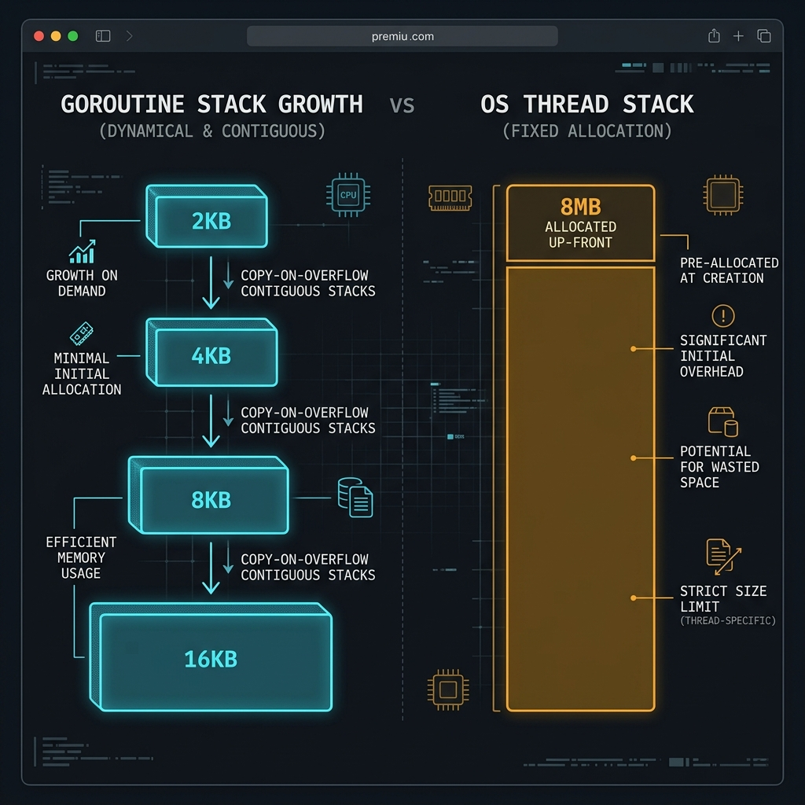
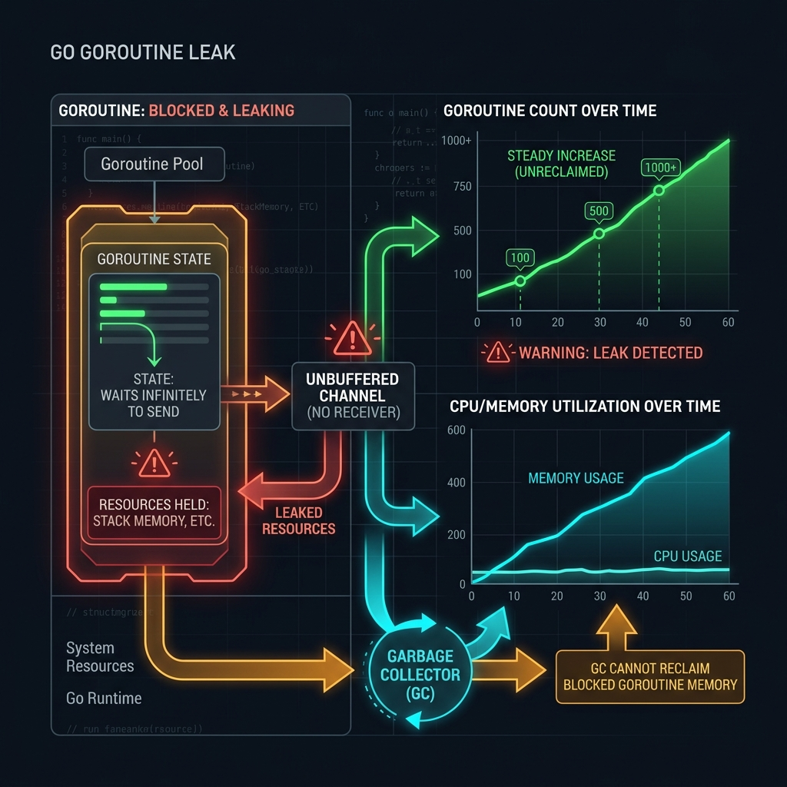

Hướng dẫn toàn diện từ advanced đến expert — Hiểu sâu cách Go runtime spawn và quản lý lightweight threads (goroutines), GMP scheduler model, các pattern production-grade, và cách phát hiện/fix goroutine leaks.
Goroutine là gì · So sánh với Thread · GMP Model · Triết lý thiết kế
Goroutine là đơn vị thực thi đồng thời (concurrent execution unit) do Go runtime quản lý — không phải OS thread. Được spawn bằng từ khoá go, một goroutine bắt đầu với stack chỉ 2KB (so với 1–8MB của OS thread) và có thể grow/shrink động.
| Thuộc tính | Process | OS Thread | Goroutine |
|---|---|---|---|
| Khởi tạo memory | ~4 MB | 1 – 8 MB (fixed stack) | 2 KB (dynamic, grows up to 1 GB) |
| Tạo mới (overhead) | ~ms, system call nặng | ~μs, context switch tốn kém | ~ns, cực kỳ nhẹ |
| Scheduling | OS kernel | OS kernel (preemptive) | Go runtime (cooperative + preemptive từ Go 1.14) |
| Context switch | Rất nặng (kernel mode) | ~1–10 μs | ~100–200 ns |
| Số lượng thực tế | Hàng chục | Hàng nghìn | Hàng triệu trên 1 machine |
| Memory sharing | Không (cần IPC) | Có (shared heap) | Có (shared heap, dùng channel an toàn hơn) |
| API tạo mới | fork(), exec() | pthread_create() | go functionName() |
Go runtime sử dụng mô hình GMP (Goroutine · Machine · Processor) để schedule goroutines lên OS threads:
GOMAXPROCS (mặc định = số CPU core). P có Local Run Queue riêng.Một trong những điểm mạnh lớn nhất của Goroutine là dynamic stack. Go runtime tự động grow/shrink stack khi cần:

| Trạng thái | Mô tả | Chuyển sang trạng thái khác khi |
|---|---|---|
_Gidle / New |
Vừa được tạo, chưa initialized | Go runtime khởi tạo xong → Runnable |
_Grunnable |
Sẵn sàng chạy, đang chờ trong run queue | M chọn để chạy → Running |
_Grunning |
Đang thực thi trên M (OS thread) | Block / syscall / preempt → Waiting/Runnable |
_Gwaiting |
Bị block: chờ channel, mutex, timer, I/O | Điều kiện được thỏa mãn → Runnable |
_Gsyscall |
Đang thực hiện blocking syscall | Syscall return → Runnable |
_Gdead |
Function return, goroutine kết thúc | Được GC hoặc reuse cho goroutine mới |
GMP Scheduler · Goroutine Lifecycle · Work Stealing
Minh hoạ cách Go runtime phân phối goroutines lên OS threads thông qua Logical Processors:
7 levels với annotated comments · intro · kết quả · lưu ý
Hiểu vấn đề khi main goroutine kết thúc trước · tại sao KHÔNG dùng time.Sleep · race condition đầu tiên
package main
import (
"fmt"
"time"
)
// ─────────────────────────────────────────────────────────────────
// VÍ DỤ 1A: Anti-pattern — Goroutine bị "killed" theo main
// ─────────────────────────────────────────────────────────────────
func antiPattern() {
fmt.Println("[main] Bắt đầu")
// Từ khoá 'go' spawn goroutine mới trong Go runtime
// Goroutine này chạy CONCURRENT (song song) với main goroutine
go func() {
// ⚠️ KHÔNG đảm bảo: goroutine này có thể KHÔNG BAO GIỜ chạy
// nếu main() return trước
fmt.Println("[goroutine] Đang chạy...")
time.Sleep(100 * time.Millisecond)
fmt.Println("[goroutine] Done!") // ← Có thể không được in
}()
fmt.Println("[main] Kết thúc") // main return ngay → goroutine bị kill
// OUTPUT thực tế:
// [main] Bắt đầu
// [main] Kết thúc
// (goroutine có thể không chạy được)
}
// ─────────────────────────────────────────────────────────────────
// VÍ DỤ 1B: Spawn goroutine với named function
// ─────────────────────────────────────────────────────────────────
func greet(name string, delay time.Duration) {
time.Sleep(delay) // Mô phỏng latency
fmt.Printf("[goroutine] Xin chào, %s!\n", name)
}
// ─────────────────────────────────────────────────────────────────
// VÍ DỤ 1C: Closure capture — Data race kinh điển
// ─────────────────────────────────────────────────────────────────
func closureRaceBug() {
fmt.Println("\n--- BUG: Closure capture loop variable ---")
for i := 0; i < 3; i++ {
go func() {
// ⚠️ DATA RACE: tất cả goroutines share cùng 'i'
// Khi goroutine chạy, i đã = 3 (loop đã xong)
fmt.Printf("i = %d\n", i) // Có thể in: 3, 3, 3
}()
}
time.Sleep(10 * time.Millisecond)
}
func closureRaceFix() {
fmt.Println("\n--- FIX: Pass i như argument ---")
for i := 0; i < 3; i++ {
i := i // ✅ Shadow biến: tạo copy mới cho mỗi iteration
go func() {
fmt.Printf("i = %d\n", i) // In đúng: 0, 1, 2 (thứ tự random)
}()
// Hoặc cách khác: pass như argument
// go func(val int) {
// fmt.Printf("i = %d\n", val)
// }(i)
}
time.Sleep(10 * time.Millisecond)
}
func main() {
// 1A: Anti-pattern
antiPattern()
// 1B: Named function goroutine
go greet("MVT", 20*time.Millisecond)
go greet("Gopher", 10*time.Millisecond)
time.Sleep(50 * time.Millisecond) // Vẫn là hack — xem Example 02 để làm đúng
// 1C: Closure race
closureRaceBug()
closureRaceFix()
time.Sleep(50 * time.Millisecond)
}
go run -race 01_basic_goroutine.go — Go race detector sẽ phát hiện closure bug trong closureRaceBug(). Luôn test với flag -race trong CI.Counter-based synchronization · defer wg.Done() pattern · goroutine-safe tradeoffs
package main
import (
"fmt"
"sync"
"time"
)
// Task đại diện cho một đơn vị công việc
type Task struct {
ID int
Name string
}
// processTask mô phỏng xử lý task với latency khác nhau
// wg *sync.WaitGroup: truyền pointer để share counter
func processTask(task Task, wg *sync.WaitGroup) {
// ① defer wg.Done() LUÔN là dòng đầu tiên
// Đảm bảo Done() được gọi kể cả khi function panic/return sớm
defer wg.Done()
// Mô phỏng công việc tốn thời gian khác nhau
duration := time.Duration(task.ID*30) * time.Millisecond
time.Sleep(duration)
fmt.Printf(" ✓ Task #%d (%s) hoàn thành sau %v\n", task.ID, task.Name, duration)
}
// ─────────────────────────────────────────────────────────────────
// Pattern: Fan-out với WaitGroup
// ─────────────────────────────────────────────────────────────────
func fanOutWithWaitGroup(tasks []Task) {
var wg sync.WaitGroup // WaitGroup với internal counter, mặc định = 0
start := time.Now()
fmt.Printf("Xử lý %d tasks song song...\n", len(tasks))
for _, task := range tasks {
wg.Add(1) // ② Tăng counter TRƯỚC khi spawn goroutine
// Không Add() trong goroutine: race condition với Wait()
go processTask(task, &wg) // ③ Truyền &wg (pointer), không phải copy
}
// ④ Wait() block cho đến khi counter = 0
// Chỉ return khi TẤT CẢ goroutines đã gọi Done()
wg.Wait()
fmt.Printf("Tất cả hoàn thành trong %v (sequential sẽ mất %v)\n",
time.Since(start),
time.Duration(len(tasks)*(len(tasks)+1)/2*30)*time.Millisecond)
}
// ─────────────────────────────────────────────────────────────────
// Pattern: Collect results với mutex + WaitGroup
// ─────────────────────────────────────────────────────────────────
func collectResults(tasks []Task) []string {
var (
wg sync.WaitGroup
mu sync.Mutex // Protect shared results slice
results []string
)
for _, task := range tasks {
wg.Add(1)
task := task // capture loop variable
go func() {
defer wg.Done()
time.Sleep(time.Duration(task.ID*20) * time.Millisecond)
result := fmt.Sprintf("result-%d", task.ID)
mu.Lock() // ⑤ Lock trước khi ghi vào shared slice
results = append(results, result)
mu.Unlock() // ⑥ Luôn Unlock() sau khi xong
}()
}
wg.Wait()
return results
}
func main() {
tasks := []Task{
{1, "DatabaseQuery"},
{2, "HTTPRequest"},
{3, "FileIO"},
{4, "CacheWarmup"},
}
// Fan-out pattern
fanOutWithWaitGroup(tasks)
// Collect results
fmt.Println("\nCollect results với mutex:")
results := collectResults(tasks[:3])
fmt.Printf("Results: %v\n", results)
}
Unbuffered vs Buffered channel · directional channels · range over channel · select
package main
import (
"fmt"
"time"
)
// ─────────────────────────────────────────────────────────────────
// Pattern 3A: Pipeline — Goroutines kết nối qua channels
// ─────────────────────────────────────────────────────────────────
// generate tạo numbers và gửi vào channel
// chan<- int: write-only (chỉ được ghi, bảo vệ ownership)
func generate(nums ...int) <-chan int {
out := make(chan int) // Unbuffered: sender block đến khi receiver sẵn sàng
go func() {
defer close(out) // ① LUÔN close channel từ phía sender khi xong
for _, n := range nums {
out <- n // Block nếu receiver chưa ready
}
}()
return out // Return read-only channel
}
// square nhân đôi và trả về channel output
func square(in <-chan int) <-chan int { // <-chan int: read-only
out := make(chan int)
go func() {
defer close(out)
for n := range in { // ② range over channel: tự động dừng khi channel đóng
out <- n * n
}
}()
return out
}
// ─────────────────────────────────────────────────────────────────
// Pattern 3B: Buffered channel — Producer không block consumer
// ─────────────────────────────────────────────────────────────────
func bufferedDemo() {
// Buffered channel: capacity=3, producer không block cho đến khi đầy
jobs := make(chan string, 3)
// Producer: gửi 3 jobs ngay lập tức (không block vì buffer còn chỗ)
jobs <- "job-1"
jobs <- "job-2"
jobs <- "job-3"
close(jobs) // Đóng sau khi gửi xong
// Consumer: xử lý tuần tự
for job := range jobs {
fmt.Printf(" Processing: %s\n", job)
}
}
// ─────────────────────────────────────────────────────────────────
// Pattern 3C: select — Multiplex nhiều channels
// ─────────────────────────────────────────────────────────────────
func selectDemo() {
ch1 := make(chan string)
ch2 := make(chan string)
go func() {
time.Sleep(50 * time.Millisecond)
ch1 <- "từ channel 1"
}()
go func() {
time.Sleep(30 * time.Millisecond)
ch2 <- "từ channel 2"
}()
// select: nhận từ channel nào sẵn sàng trước
for i := 0; i < 2; i++ {
select {
case msg1 := <-ch1:
fmt.Println("Nhận:", msg1) // ch2 nhanh hơn → ch1 nhận sau
case msg2 := <-ch2:
fmt.Println("Nhận:", msg2) // ← In trước
case <-time.After(1 * time.Second): // ③ Timeout pattern
fmt.Println("Timeout!")
}
}
}
// ─────────────────────────────────────────────────────────────────
// Pattern 3D: Done channel — Signal goroutine dừng lại
// ─────────────────────────────────────────────────────────────────
func withDoneChannel() {
done := make(chan struct{}) // struct{} size = 0 bytes, dùng để signal
results := make(chan int, 10)
// Worker goroutine
go func() {
for i := 0; ; i++ {
select {
case <-done: // ④ Nhận signal → dừng clean
fmt.Println("Worker dừng lại")
return
case results <- i * i: // Gửi kết quả nếu chưa bị done
time.Sleep(10 * time.Millisecond)
}
}
}()
// Thu thập 5 kết quả rồi dừng
for i := 0; i < 5; i++ {
fmt.Printf(" Kết quả: %d\n", <-results)
}
close(done) // ⑤ close(done) signal cho goroutine dừng (broadcast tới tất cả receivers)
time.Sleep(20 * time.Millisecond)
}
func main() {
fmt.Println("=== 3A: Pipeline ===")
// Pipeline: generate → square → print
for result := range square(generate(2, 3, 4, 5)) {
fmt.Printf(" %d\n", result) // 4, 9, 16, 25
}
fmt.Println("\n=== 3B: Buffered Channel ===")
bufferedDemo()
fmt.Println("\n=== 3C: Select Multiplex ===")
selectDemo()
fmt.Println("\n=== 3D: Done Channel ===")
withDoneChannel()
}
Propagate cancellation qua goroutine tree · WithTimeout · WithCancel · ctx.Err()
package main
import (
"context"
"fmt"
"time"
)
// fetchData mô phỏng HTTP request với context propagation
// ① Context luôn là tham số ĐẦU TIÊN theo convention Go
func fetchData(ctx context.Context, url string) (string, error) {
// Mô phỏng network latency
delay := 200 * time.Millisecond
timer := time.NewTimer(delay)
defer timer.Stop()
select {
case <-ctx.Done():
// ctx.Err() trả về nguyên nhân:
// - context.Canceled: bị cancel chủ động
// - context.DeadlineExceeded: hết timeout
return "", fmt.Errorf("fetch %s: %w", url, ctx.Err())
case <-timer.C:
return fmt.Sprintf("data từ %s", url), nil
}
}
// dbQuery mô phỏng database query
func dbQuery(ctx context.Context, query string) ([]string, error) {
// ② Luôn check ctx trước khi bắt đầu công việc nặng
if err := ctx.Err(); err != nil {
return nil, fmt.Errorf("db query cancelled trước khi bắt đầu: %w", err)
}
// Mô phỏng slow query
done := make(chan []string, 1)
go func() {
time.Sleep(100 * time.Millisecond)
done <- []string{"row1", "row2", "row3"}
}()
select {
case <-ctx.Done():
return nil, fmt.Errorf("db query timeout: %w", ctx.Err())
case result := <-done:
return result, nil
}
}
// ─────────────────────────────────────────────────────────────────
// Pattern: Context cancellation tree — Parent cancel → child cancel
// ─────────────────────────────────────────────────────────────────
func contextTree() {
// Root context với timeout 500ms cho toàn bộ operation
rootCtx, rootCancel := context.WithTimeout(context.Background(), 500*time.Millisecond)
defer rootCancel() // ③ LUÔN defer cancel() để tránh memory leak
// Child context kế thừa timeout từ parent
// Nếu parent bị cancel → child tự động bị cancel
childCtx, childCancel := context.WithCancel(rootCtx)
defer childCancel()
// Goroutine 1: HTTP request
errCh1 := make(chan error, 1)
go func() {
data, err := fetchData(childCtx, "https://api.example.com/users")
if err != nil {
errCh1 <- err
return
}
fmt.Printf(" HTTP: %s\n", data)
errCh1 <- nil
}()
// Goroutine 2: DB query
errCh2 := make(chan error, 1)
go func() {
rows, err := dbQuery(childCtx, "SELECT * FROM orders")
if err != nil {
errCh2 <- err
return
}
fmt.Printf(" DB: %d rows\n", len(rows))
errCh2 <- nil
}()
// Thu thập lỗi từ cả 2 goroutines
for i := 0; i < 2; i++ {
select {
case err := <-errCh1:
if err != nil {
fmt.Printf(" HTTP Error: %v\n", err)
childCancel() // ④ Cancel child context → goroutine còn lại dừng
}
case err := <-errCh2:
if err != nil {
fmt.Printf(" DB Error: %v\n", err)
}
case <-rootCtx.Done():
fmt.Printf(" Root timeout: %v\n", rootCtx.Err())
return
}
}
}
// ─────────────────────────────────────────────────────────────────
// Pattern: Context với value — Truyền request-scoped data
// ─────────────────────────────────────────────────────────────────
type ctxKey string // ⑤ Custom type cho key để tránh collision
const (
RequestIDKey ctxKey = "request_id"
UserIDKey ctxKey = "user_id"
)
func handler(ctx context.Context) {
reqID := ctx.Value(RequestIDKey).(string)
userID := ctx.Value(UserIDKey).(int)
fmt.Printf(" [request_id=%s, user_id=%d] Đang xử lý...\n", reqID, userID)
}
func main() {
fmt.Println("=== Context Cancellation Tree ===")
contextTree()
fmt.Println("\n=== Context với Values ===")
ctx := context.Background()
ctx = context.WithValue(ctx, RequestIDKey, "req-abc-123")
ctx = context.WithValue(ctx, UserIDKey, 42)
handler(ctx)
fmt.Println("\n=== WithDeadline vs WithTimeout ===")
// WithTimeout: relative (từ bây giờ sau X thời gian)
ctx1, cancel1 := context.WithTimeout(context.Background(), 100*time.Millisecond)
defer cancel1()
// WithDeadline: absolute (đến thời điểm cụ thể)
deadline := time.Now().Add(100 * time.Millisecond)
ctx2, cancel2 := context.WithDeadline(context.Background(), deadline)
defer cancel2()
fmt.Printf(" Timeout context deadline: %v\n", ctx1.Value("x"))
fmt.Printf(" Deadline context, same result: %v\n", ctx2.Value("x"))
}
Bounded concurrency · backpressure · graceful shutdown · error aggregation
package main
import (
"context"
"fmt"
"sync"
"time"
)
// ─────────────────────────────────────────────────────────────────
// Domain types
// ─────────────────────────────────────────────────────────────────
type Job struct {
ID int
Payload string
}
type Result struct {
JobID int
Output string
Err error
Latency time.Duration
}
// ─────────────────────────────────────────────────────────────────
// WorkerPool — Production-grade implementation
// ─────────────────────────────────────────────────────────────────
type WorkerPool struct {
numWorkers int
jobCh chan Job
resultCh chan Result
wg sync.WaitGroup
once sync.Once // Đảm bảo Stop() chỉ gọi 1 lần
}
func NewWorkerPool(numWorkers, queueSize int) *WorkerPool {
return &WorkerPool{
numWorkers: numWorkers,
// Buffered channel tạo backpressure — Submit() block khi queue đầy
jobCh: make(chan Job, queueSize),
resultCh: make(chan Result, queueSize),
}
}
// Start khởi động numWorkers goroutines
func (wp *WorkerPool) Start(ctx context.Context) {
for id := 1; id <= wp.numWorkers; id++ {
wp.wg.Add(1)
go wp.worker(ctx, id) // ① Mỗi worker là một goroutine riêng biệt
}
// Goroutine sentinel: đợi tất cả workers xong → đóng resultCh
go func() {
wp.wg.Wait()
close(wp.resultCh) // ② Báo hiệu collector: không còn kết quả nào nữa
}()
}
// worker xử lý jobs từ jobCh, gửi results vào resultCh
func (wp *WorkerPool) worker(ctx context.Context, id int) {
defer wp.wg.Done()
for {
select {
case <-ctx.Done():
// Context bị cancel → worker thoát gracefully
fmt.Printf(" [worker-%d] Dừng: %v\n", id, ctx.Err())
return
case job, ok := <-wp.jobCh:
if !ok {
// jobCh đã đóng → không còn job nào → worker exit
fmt.Printf(" [worker-%d] Queue rỗng, thoát\n", id)
return
}
// Xử lý job
result := wp.process(ctx, id, job)
// ③ Gửi result, check ctx để tránh block khi đã cancel
select {
case wp.resultCh <- result:
case <-ctx.Done():
return
}
}
}
}
// process thực hiện công việc thực sự
func (wp *WorkerPool) process(ctx context.Context, workerID int, job Job) Result {
start := time.Now()
// Mô phỏng công việc có thể bị cancel
workTimer := time.NewTimer(time.Duration(50+job.ID*10) * time.Millisecond)
defer workTimer.Stop()
select {
case <-ctx.Done():
return Result{JobID: job.ID, Err: ctx.Err(), Latency: time.Since(start)}
case <-workTimer.C:
return Result{
JobID: job.ID,
Output: fmt.Sprintf("[w%d] processed: %s", workerID, job.Payload),
Latency: time.Since(start),
}
}
}
// Submit gửi job vào queue. Block nếu queue đầy (backpressure)
func (wp *WorkerPool) Submit(ctx context.Context, job Job) error {
select {
case wp.jobCh <- job: // ④ Backpressure: block nếu queue đầy
return nil
case <-ctx.Done():
return fmt.Errorf("submit job %d: %w", job.ID, ctx.Err())
}
}
// Stop đóng jobCh để signal workers không còn job mới
func (wp *WorkerPool) Stop() {
wp.once.Do(func() { // ⑤ sync.Once đảm bảo close() chỉ gọi 1 lần
close(wp.jobCh)
})
}
// Results trả về read-only channel để thu thập kết quả
func (wp *WorkerPool) Results() <-chan Result {
return wp.resultCh
}
// ─────────────────────────────────────────────────────────────────
// Usage
// ─────────────────────────────────────────────────────────────────
func main() {
ctx, cancel := context.WithTimeout(context.Background(), 2*time.Second)
defer cancel()
// Khởi tạo pool: 3 workers, queue size 20
pool := NewWorkerPool(3, 20)
pool.Start(ctx)
// Producer: gửi 10 jobs
go func() {
for i := 1; i <= 10; i++ {
job := Job{ID: i, Payload: fmt.Sprintf("task-%d", i)}
if err := pool.Submit(ctx, job); err != nil {
fmt.Printf("Submit error: %v\n", err)
break
}
}
pool.Stop() // Báo hiệu: không còn job mới
}()
// Consumer: thu thập tất cả results
var (
successCount int
errCount int
totalLatency time.Duration
)
for result := range pool.Results() { // Block đến khi resultCh đóng
if result.Err != nil {
errCount++
fmt.Printf(" ❌ Job #%d lỗi: %v\n", result.JobID, result.Err)
} else {
successCount++
totalLatency += result.Latency
fmt.Printf(" ✓ %s (%v)\n", result.Output, result.Latency.Round(time.Millisecond))
}
}
fmt.Printf("\n📊 Thống kê: %d thành công, %d lỗi, avg latency: %v\n",
successCount, errCount,
(totalLatency / time.Duration(successCount)).Round(time.Millisecond))
}
runtime.NumGoroutine() · pprof goroutine dump · goleak · common leak patterns
package main
import (
"context"
"fmt"
"net/http"
_ "net/http/pprof" // Import side-effect: đăng ký pprof handlers
"runtime"
"time"
)
// ─────────────────────────────────────────────────────────────────
// LEAK PATTERN 1: Goroutine block trên unbuffered channel mãi mãi
// ─────────────────────────────────────────────────────────────────
func leakPattern1() {
ch := make(chan int) // Unbuffered, không ai gửi vào
go func() {
// ⚠️ LEAK: Block mãi mãi, không bao giờ thoát
// Function return nhưng goroutine vẫn "alive" trong runtime
val := <-ch
fmt.Println("Never reached:", val)
}()
// ch không được close, không ai gửi → goroutine stuck forever
}
// ─────────────────────────────────────────────────────────────────
// LEAK PATTERN 2: Goroutine block trên channel send khi không ai nhận
// ─────────────────────────────────────────────────────────────────
func leakPattern2() {
result := make(chan int) // Unbuffered
go func() {
// ⚠️ LEAK: Nếu caller đã return, không ai nhận từ result
time.Sleep(1 * time.Second) // Simulate work
result <- 42 // Block nếu caller đã thoát
}()
// Caller return sau timeout mà không đọc result
// → goroutine bị stuck tại "result <- 42" mãi mãi
time.Sleep(100 * time.Millisecond)
return
// Goroutine bị orphaned ở đây!
}
// ─────────────────────────────────────────────────────────────────
// FIX PATTERN 1: Dùng context để cancel goroutine
// ─────────────────────────────────────────────────────────────────
func fixWithContext(ctx context.Context) {
ch := make(chan int)
go func() {
select {
case val := <-ch:
fmt.Println("Nhận:", val)
case <-ctx.Done(): // ✅ Thoát khi ctx bị cancel
fmt.Println("Goroutine thoát: context cancelled")
return
}
}()
}
// ─────────────────────────────────────────────────────────────────
// FIX PATTERN 2: Buffered channel tránh goroutine bị stuck
// ─────────────────────────────────────────────────────────────────
func fixWithBufferedChannel() <-chan int {
// ✅ Buffered channel: goroutine gửi không bị block
// kể cả khi caller không đọc ngay
result := make(chan int, 1) // capacity=1 = tối thiểu để không leak
go func() {
time.Sleep(100 * time.Millisecond)
result <- 42 // ✅ Gửi thành công, goroutine thoát
}()
return result
}
// ─────────────────────────────────────────────────────────────────
// Monitoring: Đếm goroutines để detect leak trong tests
// ─────────────────────────────────────────────────────────────────
func goroutineCount() int {
return runtime.NumGoroutine()
}
func detectLeak(name string, fn func()) {
before := goroutineCount()
fn()
time.Sleep(50 * time.Millisecond) // Chờ goroutines start
after := goroutineCount()
leaked := after - before
if leaked > 0 {
fmt.Printf(" ⚠️ %s: LEAKED %d goroutines (total: %d)\n", name, leaked, after)
} else {
fmt.Printf(" ✅ %s: No leak (goroutines: %d)\n", name, after)
}
}
// ─────────────────────────────────────────────────────────────────
// pprof: Dump goroutine stack traces (production debugging)
// ─────────────────────────────────────────────────────────────────
func startPprofServer() {
// Trong production: http://localhost:6060/debug/pprof/goroutine?debug=2
// Hiển thị stack trace của TẤT CẢ goroutines đang chạy
go func() {
// http.ListenAndServe(":6060", nil) // Bật để debug
_ = http.ListenAndServe // Placeholder
}()
}
func main() {
fmt.Printf("Initial goroutines: %d\n\n", goroutineCount())
// Test leak patterns
detectLeak("leakPattern1 (chan receive)", leakPattern1)
detectLeak("leakPattern2 (chan send)", leakPattern2)
// Test fixes
ctx, cancel := context.WithCancel(context.Background())
detectLeak("fixWithContext (trước cancel)", func() {
fixWithContext(ctx)
})
cancel() // Cancel → goroutine thoát
time.Sleep(20 * time.Millisecond) // Đợi goroutine thực sự thoát
fmt.Printf(" 📊 Sau cancel: %d goroutines\n", goroutineCount())
detectLeak("fixWithBufferedChannel", func() {
ch := fixWithBufferedChannel()
_ = ch // Không đọc từ ch → goroutine vẫn thoát nhờ buffered
})
// Dump goroutine info qua runtime
fmt.Printf("\n📊 Final goroutine count: %d\n", goroutineCount())
// ── Cách xem goroutine stack trong production ──
// $ go tool pprof http://localhost:6060/debug/pprof/goroutine
// (pprof) top
// (pprof) traces
//
// Hoặc dùng uber-go/goleak trong tests:
// func TestXxx(t *testing.T) {
// defer goleak.VerifyNone(t)
// // ... test code
// }
}
defer goleak.VerifyNone(t) — tự động fail test nếu có goroutine leak. Kết hợp với go test -race để phát hiện race condition.
golang.org/x/sync/errgroup · SetLimit() · channel-based semaphore · graceful error propagation
package main
import (
"context"
"errors"
"fmt"
"math/rand"
"sync"
"time"
"golang.org/x/sync/errgroup"
"golang.org/x/sync/semaphore"
)
// ─────────────────────────────────────────────────────────────────
// Pattern 7A: errgroup — Concurrent tasks với error propagation
// errgroup = WaitGroup + error collection + context cancellation
// ─────────────────────────────────────────────────────────────────
type ServiceResult struct {
Service string
Data string
}
// callService mô phỏng gọi external service
func callService(ctx context.Context, name string, failChance float64) (ServiceResult, error) {
// Mô phỏng latency ngẫu nhiên
delay := time.Duration(50+rand.Intn(100)) * time.Millisecond
timer := time.NewTimer(delay)
defer timer.Stop()
select {
case <-ctx.Done():
return ServiceResult{}, fmt.Errorf("service %s: %w", name, ctx.Err())
case <-timer.C:
// Mô phỏng failure
if rand.Float64() < failChance {
return ServiceResult{}, fmt.Errorf("service %s: connection refused", name)
}
return ServiceResult{Service: name, Data: fmt.Sprintf("data-from-%s", name)}, nil
}
}
func fanOutWithErrgroup(ctx context.Context) error {
// errgroup.WithContext: nếu bất kỳ goroutine nào return error
// → ctx bị cancel → tất cả goroutines còn lại nhận signal dừng
g, ctx := errgroup.WithContext(ctx)
// ① SetLimit: bounded concurrency — tối đa 3 goroutines đồng thời
// Ngăn chặn spike CPU/memory khi nhiều services được gọi
g.SetLimit(3)
services := []string{"auth", "user", "order", "payment", "notification"}
results := make([]ServiceResult, len(services))
for i, svc := range services {
i, svc := i, svc // ② CRITICAL: capture loop variables
// g.Go() block nếu đã đạt limit (SetLimit)
g.Go(func() error {
result, err := callService(ctx, svc, 0.1) // 10% failure rate
if err != nil {
return err // ③ Lỗi đầu tiên cancel tất cả goroutines còn lại
}
// ④ An toàn: mỗi goroutine ghi vào index riêng biệt
results[i] = result
fmt.Printf(" ✓ %s responded\n", svc)
return nil
})
}
// ⑤ Wait() return lỗi đầu tiên, đảm bảo tất cả goroutines đã done
if err := g.Wait(); err != nil {
return fmt.Errorf("fan-out failed: %w", err)
}
for _, r := range results {
fmt.Printf(" Result: %s → %s\n", r.Service, r.Data)
}
return nil
}
// ─────────────────────────────────────────────────────────────────
// Pattern 7B: Channel-based Semaphore
// Kiểm soát số goroutines đồng thời không cần external package
// ─────────────────────────────────────────────────────────────────
type Semaphore struct {
ch chan struct{}
}
func NewSemaphore(n int) *Semaphore {
return &Semaphore{ch: make(chan struct{}, n)}
}
// Acquire block cho đến khi có slot trống (hoặc ctx cancel)
func (s *Semaphore) Acquire(ctx context.Context) error {
select {
case s.ch <- struct{}{}: // ⑥ Gửi vào channel = chiếm slot
return nil
case <-ctx.Done():
return ctx.Err()
}
}
// Release trả slot về
func (s *Semaphore) Release() {
<-s.ch // ⑦ Nhận từ channel = giải phóng slot
}
func boundedCrawler(ctx context.Context, urls []string, maxConcurrent int) {
sem := NewSemaphore(maxConcurrent) // Tối đa maxConcurrent goroutines
var wg sync.WaitGroup
for _, url := range urls {
url := url
wg.Add(1)
go func() {
defer wg.Done()
if err := sem.Acquire(ctx); err != nil {
fmt.Printf(" Skip %s: %v\n", url, err)
return
}
defer sem.Release() // ⑧ LUÔN release trong defer
// Critical section: tối đa maxConcurrent goroutines ở đây cùng lúc
time.Sleep(50 * time.Millisecond) // Mô phỏng HTTP request
fmt.Printf(" Crawled: %s\n", url)
}()
}
wg.Wait()
}
// ─────────────────────────────────────────────────────────────────
// Pattern 7C: golang.org/x/sync/semaphore — Weighted semaphore
// Dùng khi goroutines có "trọng lượng" khác nhau (CPU, memory cost)
// ─────────────────────────────────────────────────────────────────
func weightedSemaphoreDemo(ctx context.Context) {
// Tổng "weight" tối đa = 10 (như memory slots, CPU tokens, etc.)
sem := semaphore.NewWeighted(10)
var wg sync.WaitGroup
tasks := []struct {
name string
weight int64 // Light task=1, Heavy task=5
}{
{"light-1", 1}, {"light-2", 1}, {"light-3", 1},
{"heavy-1", 5}, {"heavy-2", 5},
{"medium-1", 3}, {"medium-2", 3},
}
for _, task := range tasks {
task := task
wg.Add(1)
go func() {
defer wg.Done()
// Acquire weight units — block nếu không đủ
if err := sem.Acquire(ctx, task.weight); err != nil {
fmt.Printf(" %s: cancelled\n", task.name)
return
}
defer sem.Release(task.weight)
time.Sleep(time.Duration(task.weight*20) * time.Millisecond)
fmt.Printf(" ✓ %s (weight=%d) done\n", task.name, task.weight)
}()
}
wg.Wait()
}
// ─────────────────────────────────────────────────────────────────
// Pattern 7D: Custom error aggregation — Collect all errors
// (thay vì dừng tại error đầu tiên như errgroup)
// ─────────────────────────────────────────────────────────────────
type MultiError struct {
mu sync.Mutex
errs []error
}
func (me *MultiError) Add(err error) {
if err == nil {
return
}
me.mu.Lock()
me.errs = append(me.errs, err)
me.mu.Unlock()
}
func (me *MultiError) Err() error {
me.mu.Lock()
defer me.mu.Unlock()
if len(me.errs) == 0 {
return nil
}
return errors.Join(me.errs...) // Go 1.20+ join multiple errors
}
func main() {
ctx, cancel := context.WithTimeout(context.Background(), 5*time.Second)
defer cancel()
fmt.Println("=== errgroup Fan-out ===")
if err := fanOutWithErrgroup(ctx); err != nil {
fmt.Printf("Error: %v\n", err)
}
fmt.Println("\n=== Channel-based Semaphore (max 2 concurrent) ===")
urls := []string{"/page/1", "/page/2", "/page/3", "/page/4", "/page/5"}
boundedCrawler(ctx, urls, 2) // Tối đa 2 crawlers đồng thời
fmt.Println("\n=== Weighted Semaphore ===")
weightedSemaphoreDemo(ctx)
}
go get golang.org/x/sync — Package chuẩn của Go team, dùng cho errgroup và semaphore. Trong go.mod: require golang.org/x/sync v0.7.0
8 anti-patterns phổ biến nhất với root cause & production fix

| Lỗi | Mức độ | Root Cause | Cách Fix |
|---|---|---|---|
| Goroutine Leak — blocked receiver | Critical | Goroutine chờ nhận từ channel nhưng sender không bao giờ gửi và channel không được close | Dùng context.Context với select { case <-ctx.Done() }. Luôn close channel từ phía sender. |
| Goroutine Leak — blocked sender | Critical | Goroutine gửi vào unbuffered channel nhưng receiver đã return (caller timeout) | Dùng buffered channel make(chan T, 1) hoặc check ctx.Done() trước khi send. |
| Closure captures loop variable | Critical | Goroutine trong loop dùng biến i từ outer scope — khi chạy, i đã bằng giá trị cuối |
Shadow: i := i trong loop body hoặc pass như argument: go func(val int) {}(i) |
| Data Race trên shared map | Critical | Nhiều goroutines đọc/ghi cùng một map không được protect |
Dùng sync.RWMutex hoặc sync.Map (read-heavy). Detect bằng go test -race. |
| Quên defer wg.Done() | High | wg.Wait() block mãi mãi nếu Done() không được gọi khi goroutine panic/return sớm |
LUÔN defer wg.Done() là dòng ĐẦU TIÊN trong goroutine function. Không gọi Done trong defer của defer. |
| Quên defer cancel() cho context | High | WithTimeout/WithCancel leak nội bộ goroutine + timer nếu cancel không được gọi |
ctx, cancel := context.WithTimeout(...); defer cancel() — cancel ngay sau khi tạo context. |
| Close channel từ receiver | High | Receiver close channel → nếu sender tiếp tục gửi → panic: send on closed channel | Chỉ sender được close channel. Dùng done channel để signal sender dừng. |
| Goroutine pool không bounded | High | Spawn goroutine trong loop không giới hạn → OOM khi input lớn (1M requests = 1M goroutines) | Dùng Worker Pool pattern (Example 05) hoặc errgroup.SetLimit(n) (Example 07) để giới hạn concurrency. |
| time.Sleep để đồng bộ goroutines | Medium | Race condition trong CI: test chạy nhanh hơn sleep duration → flaky tests | Dùng sync.WaitGroup, channel, hoặc context. Sleep chỉ dùng trong demo/example. |
| Panic trong goroutine không được recover | High | Goroutine panic → crash toàn bộ program, không chỉ goroutine đó | Thêm defer func() { if r := recover(); r != nil { log.Error(r) } }() ở top của critical goroutines. |
Official docs · Advanced readings · Tools